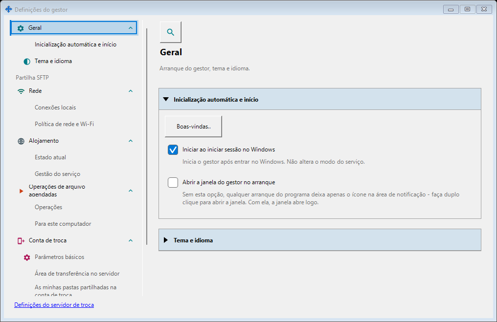
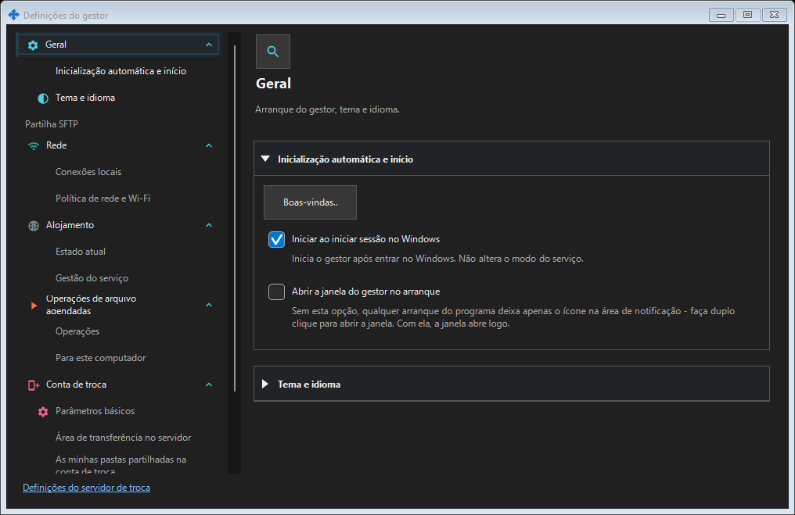
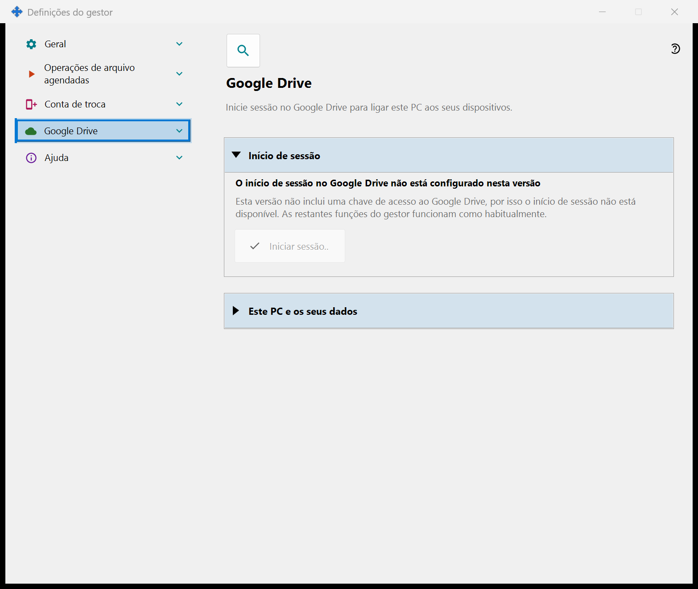
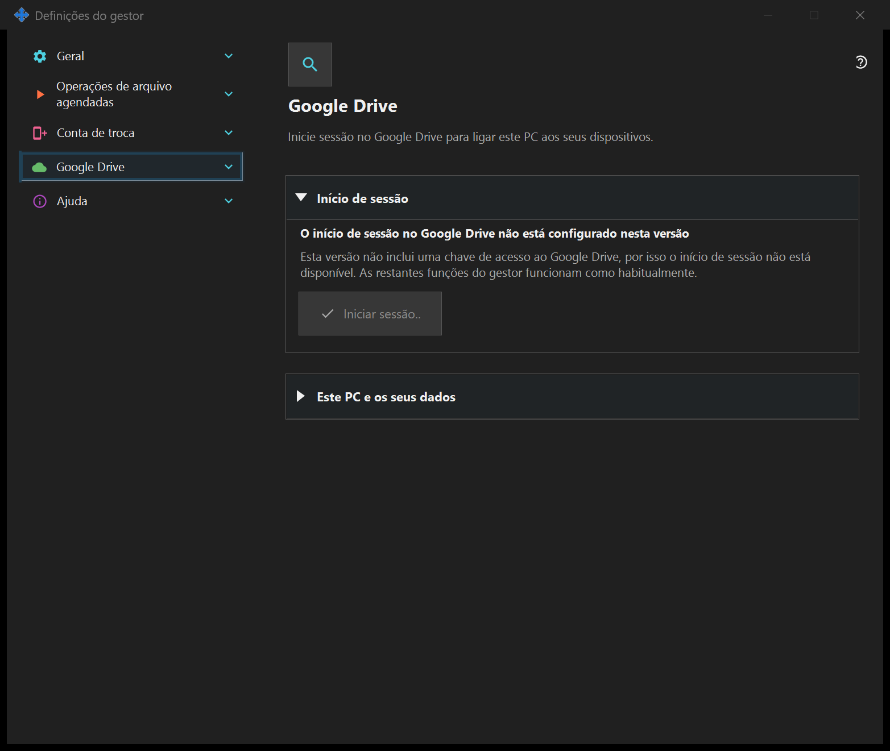

Definições do gestor
Definições do gestor
Finalidade
Arranque, tema, idioma, conta remota, publicação, área de transferência e operações agendadas pertencem ao gestor e não exigem servidor local. Se o componente de partilha SFTP estiver instalado, as suas páginas formam um grupo nesta janela.


Nesta ordem
Abra pela área de notificação ou pelas ligações dos componentes. Abrir e fechar não inicia nem para servidores. O acesso remoto não exige servidor local.
Os elementos
Definições do gestor
Arranque, tema, idioma, conta remota, publicação, área de transferência e operações agendadas pertencem ao gestor e não exigem servidor local. Se o componente de partilha SFTP estiver instalado, as suas páginas formam um grupo nesta janela. Abra pela área de notificação ou pelas ligações dos componentes. Abrir e fechar não inicia nem para servidores. O acesso remoto não exige servidor local.
Definições do gestor
Arranque, tema, idioma, conta remota, publicação, área de transferência e operações agendadas pertencem ao gestor e não exigem servidor local. Se o componente de partilha SFTP estiver instalado, as suas páginas formam um grupo nesta janela. Abra pela área de notificação ou pelas ligações dos componentes. Abrir e fechar não inicia nem para servidores. O acesso remoto não exige servidor local.
Google Drive
Aqui este PC inicia sessão na sua própria conta Google para que a aplicação possa usar a sua pasta oculta privada no seu Google Drive. Clique em «Iniciar sessão..»: o navegador predefinido abre-se, confirma o acesso na Google e a Google devolve a resposta a este PC através de um endereço local; depois pode fechar o separador do navegador. A única permissão pedida é o acesso à pasta oculta própria da aplicação no seu Google Drive (âmbito drive.appdata): a aplicação não consegue ver nenhum outro ficheiro do seu Google Drive e não recebe nem o endereço de e-mail nem dados do perfil. Se a Google conceder um acesso diferente do pedido, o início de sessão é recusado. A linha a negrito mostra o estado. «Sessão não iniciada no Google Drive»: «Iniciar sessão..» está disponível; se o acesso foi revogado ou expirou, a linha abaixo di-lo e pede para iniciar sessão novamente. «A aguardar o início de sessão no navegador..»: conclua o início de sessão no navegador ou clique em «Cancelar». «Sessão iniciada no Google Drive»: este PC está ligado ao seu Google Drive e são mostrados o seu nome e o identificador curto. «O Google Drive está indisponível neste momento»: a linha abaixo indica o motivo - sem ligação, limite diário de carregamento atingido, sem espaço livre no seu Google Drive ou um erro da Google; sem ligação ou perante um erro, a aplicação tenta novamente por si. «A terminar a sessão no Google Drive..» aparece enquanto a sessão está a ser terminada. «Sair neste dispositivo» faz uma única pergunta e a resposta predefinida é «Não». Depois de «Sim», revoga o acesso na Google, elimina os registos deste PC da pasta oculta do seu Google Drive e elimina o token de início de sessão guardado neste PC; uma linha sob os botões indica quantos registos foram eliminados ou que a Google não confirmou a revogação, que pode então fazer nas definições da sua conta Google. Numa versão sem chave de acesso da Google, a página mostra «O início de sessão no Google Drive não está configurado nesta versão», «Iniciar sessão..» fica desativado e as restantes funções do gestor funcionam como habitualmente.


Definições do gestor
Arranque, tema, idioma, conta remota, publicação, área de transferência e operações agendadas pertencem ao gestor e não exigem servidor local. Se o componente de partilha SFTP estiver instalado, as suas páginas formam um grupo nesta janela. Abra pela área de notificação ou pelas ligações dos componentes. Abrir e fechar não inicia nem para servidores. O acesso remoto não exige servidor local.
Definições do gestor
Arranque, tema, idioma, conta remota, publicação, área de transferência e operações agendadas pertencem ao gestor e não exigem servidor local. Se o componente de partilha SFTP estiver instalado, as suas páginas formam um grupo nesta janela. Abra pela área de notificação ou pelas ligações dos componentes. Abrir e fechar não inicia nem para servidores. O acesso remoto não exige servidor local.
Definições do servidor de troca
Definições do gestor · Definições de partilha SFTP · Definições do servidor de troca